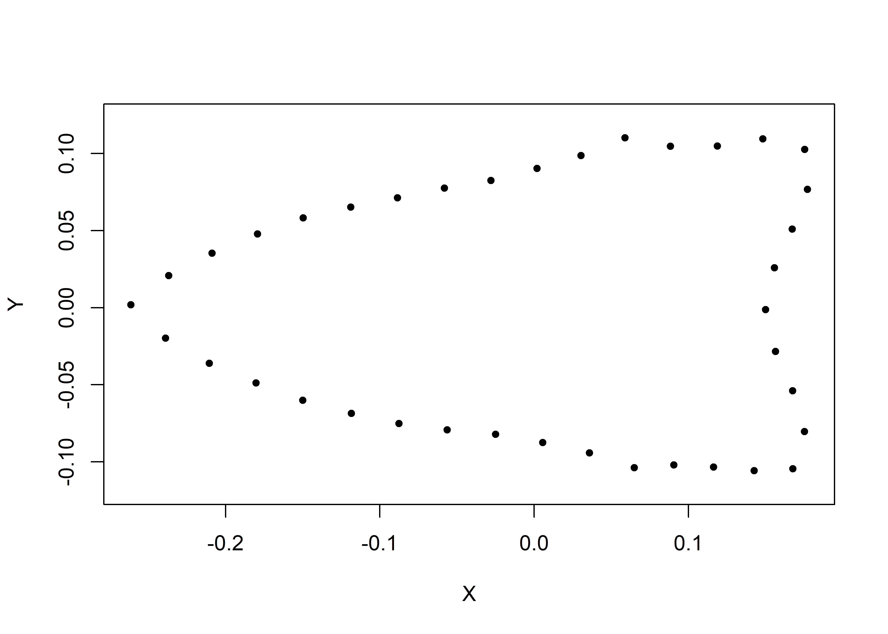
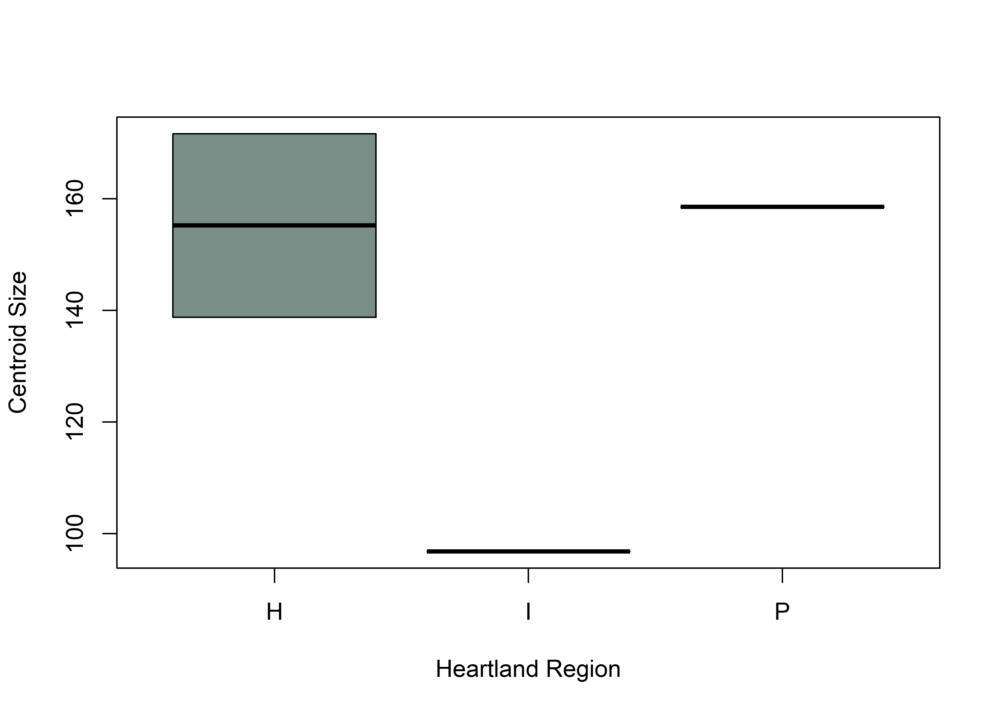

This volume is in Open Review. I want your feedback to make the volume better for you and other readers. To add your annotation, select some text and then click the on the pop-up menu. To see the annotations of others, click the in the upper right hand corner of the page
Chapter 2 Analysis
2.1 Generalised Procrustes Analysis
# library(devtools)
# devtools::install_github("geomorphR/geomorph", ref = "Stable", build_vignettes = TRUE)
library(geomorph)
library(wesanderson)
setwd(getwd())
# read GM data
source('readmulti.csv.R')
# read .csv files
setwd("./data")
filelist <- list.files(pattern = ".csv")
coords <- readmulti.csv(filelist)
setwd("../")
# read qualitative data
qdata <- read.csv("qdata.csv",header=TRUE,row.names=1)
qdata <- qdata[match(dimnames(coords)[[3]],rownames(qdata)),]
qdata## heart.out heart.reg
## 11AI225 H H
## 11HE445 N P
## HK49_2 N I
## KeilMangold13 H H# gpa
Y.gpa <- gpagen(coords, PrinAxes = TRUE, ProcD = TRUE, Proj = TRUE, print.progress = FALSE)
# gpa plot
# knitr::include_graphics('images/gpa3d.png')
# fig.cap="Results of generalized Procrustes analysis."
# geomorph data frame
gdf <- geomorph.data.frame(shape = Y.gpa$coords, size = Y.gpa$Csize, heart = qdata$heart.out, hreg = qdata$heart.reg)
# attributes for boxplots
csz <- Y.gpa$Csize # centroid size
heart <- qdata$heart.out # heartland in/out
hreg <- qdata$heart.reg # heartland region
# boxplot of Dalton point centroid size by in/out Heartland
boxplot(csz~heart,
names = c("H","N"), # heartland (H), and not heartland (N)
xlab = "Heartland",
ylab = "Centroid Size",
col = wes_palette("Moonrise2"),
)
fig.cap = "Boxplot of centroid size by Heartland (in/out)."
# boxplot of Dalton point centroid size by Heartland Region
boxplot(csz~hreg,
names = c("H","I","P"), # heartland (H), interior (I), and northern periphery (P)
xlab = "Heartland Region",
ylab = "Centroid Size",
col = wes_palette("Moonrise2"),
)